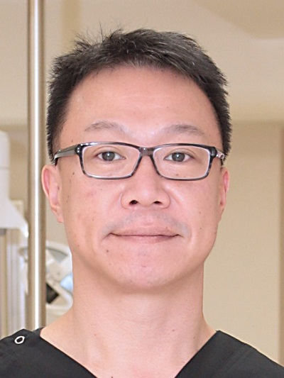

ドクター紹介 DOCTOR

院長 岡田 秀一
私たちは地域の皆様の「ホームドクター」として信頼されるよう、治療に取り組んでいます。また、安心して受診していただけるよう丁寧で分かりやすい説明を心がけております。
より良い歯科医療を提供するため、様々な研修会で研鑚を重ねております。「歯」に関するお悩みがあれば、お気軽にご相談ください。
経歴
| 1995年 | 長崎大学 歯学部 卒業 |
|---|---|
| 藤原歯科医院 勤務 | |
| 2001年 | おかだ歯科クリニック 開設 |
会員・資格
矯正担当 岡田 美千代
矯正治療を担当しております。
歯ならびに関するお悩みがあれば、まずは「相談」のご予約をお取り下さい。
現在の歯ならびの状態、治療をする場合の流れ、方法、期間、費用などについてお話させていただきます。
経歴
| 1994年 | 長崎大学 歯学部 卒業 |
|---|---|
| 1994年～1999年 | 渡辺矯正歯科クリニック 勤務 |
| 愛知学院大学 歯学部歯科矯正学講座研究生 | |
| 2001年～ | おかだ歯科クリニック 勤務 |